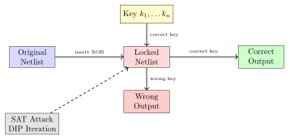
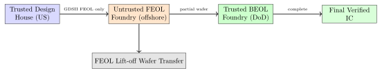

Chapter 7: Hardware Trojan Detection¶
Note: Hardware Trojans are malicious modifications to ICs introduced during design, fabrication, or supply chain. They bypass software security and survive OS reinstallation.
7.1 Hardware Trojan Taxonomy¶
A hardware Trojan consists of a trigger and payload. Classification: insertion phase, activation, effect, location.
| Axis | Category | Examples |
|---|---|---|
| Insertion | Design time | RTL modification, EDA tool compromise |
| Insertion | Fabrication | Doping modification, extra via insertion |
| Activation | Always-on | Permanent key leakage |
| Activation | Rare trigger (1-in-\(2^{32}\)) | Combinational condition |
| Activation | External trigger | RF signal, specific input sequence |
| Effect | Information leak | Covert channel, RF exfiltration |
| Effect | Denial of service | Functional failure at trigger |
| Effect | Privilege escalation | Bypass authentication check |
| Location | Combinational | Extra gates in critical path |
| Location | Sequential | Added flip-flops, state machine |
7.1.1 Real-World Examples¶
Stuxnet (2010): Malware manipulated Siemens S7-315 PLCs controlling centrifuge frequency, causing physical damage while reporting normal operation to SCADA systems.
Juniper ScreenOS Backdoor (2015): Unauthorized change to firewall firmware allowed passive VPN decryption via modified Dual_EC_DRBG constant.
Bloomberg Supermicro Allegations (2018): Claimed rice-grain-sized implant chip on server motherboards capable of intercepting communications (disputed by all parties).
DoD Counterfeit Parts (2012): 1,800 documented cases of counterfeit parts in defense equipment, some with functional differences from specifications.
7.2 Detection Methods¶
7.2.1 Side-Channel Analysis¶
Trojans perturb power, delay, and EM signatures. Challenge: distinguishing from process variation (\(\sigma_P\approx3\%\)).
Power fingerprinting: Compare suspect chip integrated power vs. golden reference. Trojans with \(\geq 1000\) gates (\(\approx 0.01\%\) of modern SoC) are detectable with \(\geq 100\) measurements.
Path delay analysis: Ring oscillator sensors measure path delay with picosecond resolution, detecting Trojan-induced capacitive loading or combinational depth increase.
7.2.2 Logic Testing¶
Standard ATPG achieves \(>99\%\) stuck-at fault coverage but Trojans with rare triggers (\(<2^{-40}\) probability) are undetectable with functional vectors. Trojan-oriented ATPG (TPAT) maximizes trigger probability but coverage remains limited.
7.2.3 Formal Verification¶
Model checking (Cadence JasperGold, Synopsys VC Formal, Mentor Questa Formal) compares RTL against a golden specification. Complete coverage but does not scale to full SoC (\(>10^9\) gates). Best applied to crypto cores, boot ROM, and key management logic.
7.2.4 Physical Inspection¶
SEM: Zeiss Sigma 500 SEM provides nanometer-resolution cross-sections identifying unauthorized vias, implants, or doping modifications. Destructive; limited to sampling.
X-ray CT: Nikon XT H 225 ST provides non-destructive 3D inspection at 1 \(\mu\)m resolution. Detects unexpected components, embedded chips, and unauthorized solder connections. Feasible for 100% lot inspection of small packages.
FIB/SEM: Zeiss ORION NanoFab FIB/SEM enables cross-section analysis at 5 nm resolution. Can verify individual transistors and metal connections against design database. Required for definitive Trojan confirmation.
Delayering: Sequential chemical delayering (HF/H\(_2\)SO\(_4\)) followed by automated optical inspection using computer vision comparison against a clean reference die.
7.2.5 Machine Learning for Trojan Detection¶
GNN on netlists: Graph Neural Networks classify IC netlists as directed graphs (nodes = gates, edges = wires). Node features: gate type, fanin, fanout, timing criticality. Trained on TRUST-HUB benchmarks; \(>95\%\) accuracy on known Trojan types.
ML on power traces: Autoencoder-based anomaly detection on golden chip power profiles; LSTM classifiers achieve \(>90\%\) detection rate for power-visible Trojans.
7.3 Logic Locking¶
7.3.1 Key-Based Logic Locking¶
Logic locking inserts key-controlled XOR/XNOR gates throughout the netlist. Only the correct key (stored in tamper-proof eFUSE or NVRAM) produces correct outputs. An attacker with an unlocked chip cannot reverse-engineer the original functionality.

7.3.2 SAT Attack on Logic Locking¶
The SAT attack (Subramanyan et al., 2015) finds the correct key via Discriminating Input Pairs (DIPs):
-
Initialize CNF \((x, k^1, k^2, y^1, y^2)\) with two key instances sharing the locked netlist structure.
-
Solve \(\wedge (y^1 \neq y^2)\) to find a DIP: input producing different outputs for \(k^1\) vs. \(k^2\).
-
Query oracle chip with DIP; obtain correct output \(y^*\).
-
Add constraint: eliminate all keys where \({\text{locked}}(\text{DIP}, k) \neq y^*\).
-
Repeat until no DIP exists. Remaining key candidates are all correct.
For 128-bit key, SAT attack converges in \(<000 iterations (\)< min). Countermeasures: SFLL (Stripped Functionality Logic Locking), Cyclic Logic Locking, SFLL-HD.
7.4 TRUST-HUB Benchmarks¶
| Benchmark | Host | Trigger | Payload | Gates |
|---|---|---|---|---|
| AES-T100 | AES-128 | 32-bit counter (\(2^{32}\)) | Key scan leakage | 11 |
| AES-T200 | AES-128 | Sequential counter | Output XOR corruption | 22 |
| AES-T400 | AES-128 | Internal state combo | Covert RF channel | 18 |
| RS232-T100 | RS232 UART | Character sequence | DoS reset | 8 |
| PIC16-T20 | PIC16 MCU | Specific opcode | PC hijack | 35 |
| b19-T100 | ISCAS b19 | Combinational trigger | Output fault | 7 |
7.5 Split Manufacturing and Supply Chain Security¶
Split manufacturing separates FEOL (transistors, lower metal layers) from BEOL (upper metal, routing) across two foundries. The untrusted FEOL foundry sees only partial connectivity, preventing Trojan insertion via routing manipulation.

DoD Trusted Foundry Program: GlobalFoundries Malta NY (DMEA-accredited, 14nm/7nm) and IBM East Fishkill (22nm FDX) operate under DoD Trusted Foundry designation. All ASIC designs for classified programs must use accredited fabrication.
Proximity Attack: An attacker with FEOL-only GDSII can attempt to reconstruct missing BEOL via cell proximity analysis. Defense: gate-level obfuscation inserts dummy cells to disrupt proximity inference.
Note: Split manufacturing adds 20–35% cost overhead but is mandated for DoD Category IA systems under MIL-STD-3071. Commercially available through MOSIS/GlobalFoundries Split-Fab service.
7.6 FPGA-Based Trojan Detection¶
FPGAs enable in-situ Trojan monitoring via embedded ring oscillator (RO) networks and power supply monitors.
| Method | LUTs | FFs | BRAMs | Fmax (MHz) |
|---|---|---|---|---|
| RO Sensor Network (64 ROs) | 512 | 256 | 0 | N/A |
| Power Monitor (XADC) | 128 | 64 | 0 | 100 |
| GNN Netlist Scanner | 8,400 | 4,200 | 16 | 50 |
| ATPG Trojan BIST | 3,200 | 1,600 | 4 | 200 |
| Full Detection Suite | 12,240 | 6,120 | 20 | 50 |
Ring Oscillator Implementation: 64-element RO network using CARRY4-based oscillators achieves 2 ps delay resolution. Baseline calibration over 10,000 cycles; Mahalanobis distance detects Trojan-induced \(\geq0.5\%\) delay change at \(3\sigma\) confidence.
7.7 ASIC Ring Oscillator Sensor Array¶
Commercial Trojan-detection ASICs embed RO sensor arrays alongside crypto cores. STMicroelectronics STA013 (28nm FDSOI) integrates 256 ROs per mm\(^2\), measuring path delays with 0.1 ps resolution.
| Platform | Tech | Area (kGE) | Power (mW) | Detect (gates) |
|---|---|---|---|---|
| RO Array (256 sensors) | 28nm FDSOI | 18.4 | 1.2 | \(\geq 500\) |
| Power Fingerprint Unit | 40nm LP | 8.2 | 0.4 | \(\geq 1000\) |
| Path Delay Monitor | 28nm FDSOI | 12.6 | 0.8 | \(\geq 300\) |
| EM Emission Monitor | 65nm GP | 22.0 | 3.1 | \(\geq 2000\) |
7.8 GNN-Based Trojan Detection: Python Implementation¶
The following PyTorch Geometric code trains a Graph Neural Network to classify IC netlists.
import torch
import torch.nn.functional as F
from torch_geometric.nn import GCNConv, global_mean_pool
from torch_geometric.data import Data, DataLoader
import numpy as np
class TrojanGNN(torch.nn.Module):
def __init__(self, node_features=8, hidden=64, classes=2):
super().__init__()
self.conv1 = GCNConv(node_features, hidden)
self.conv2 = GCNConv(hidden, hidden)
self.conv3 = GCNConv(hidden, hidden//2)
self.fc = torch.nn.Linear(hidden//2, classes)
def forward(self, x, edge_index, batch):
x = F.relu(self.conv1(x, edge_index))
x = F.dropout(x, p=0.3, training=self.training)
x = F.relu(self.conv2(x, edge_index))
x = F.relu(self.conv3(x, edge_index))
x = global_mean_pool(x, batch) # graph-level embedding
return self.fc(x)
# Build Data object from netlist adjacency matrix
# node_feat: [gate_type_onehot(6), fanin, fanout]
def netlist_to_graph(adj, node_feat):
edge_index = torch.tensor(np.array(adj.nonzero()), dtype=torch.long)
x = torch.tensor(node_feat, dtype=torch.float)
return Data(x=x, edge_index=edge_index)
# Training loop (TRUST-HUB AES-T100 to AES-T400)
model = TrojanGNN(node_features=8, hidden=64)
optimizer = torch.optim.Adam(model.parameters(), lr=0.001)
criterion = torch.nn.CrossEntropyLoss()
for epoch in range(200):
model.train()
total_loss = 0
for batch in train_loader:
optimizer.zero_grad()
out = model(batch.x, batch.edge_index, batch.batch)
loss = criterion(out, batch.y)
loss.backward()
optimizer.step()
total_loss += loss.item()
if epoch
print(f'Epoch {epoch}: Loss={total_loss/len(train_loader):.4f}')
# Inference: accuracy > 95
Tip: Train on all TRUST-HUB benchmark variants. Use node features: one-hot gate type (AND/OR/XOR/NOT/FF/MUX), normalized fanin, normalized fanout, slack from timing analysis. The GNN achieves \(>95\%\) detection on known Trojans but is limited to Trojan patterns seen during training.
7.9 Verilog Trojan Example and Detection¶
The AES-T100 TRUST-HUB benchmark inserts a 32-bit counter as trigger and leaks the encryption key via an output wire when the counter overflows.
// AES-T100: Combinational Trojan - key scan leakage
// Trigger: 32-bit counter reaches all-ones
module aes_trojan_t100(
input wire clk, rst_n,
input wire [7:0] plaintext_byte,
output wire [7:0] ciphertext_byte,
output wire trojan_out // Trojan payload wire
);
// === LEGITIMATE AES DATAPATH ===
wire [127:0] key_internal; // AES round key
// ... AES logic omitted for brevity ...
// === TROJAN TRIGGER: 32-bit counter ===
reg [31:0] trojan_cnt;
always @(posedge clk or negedge rst_n) begin
if (!rst_n) trojan_cnt <= 32'd0;
else trojan_cnt <= trojan_cnt + 1;
end
// === TROJAN PAYLOAD: leak key bit ===
// Activated when all 32 counter bits are 1 (1-in-2^32 event)
assign trojan_out = (&trojan_cnt) ? key_internal[0] : 1'b0;
endmodule
Detection: Formal verification with JasperGold checks \(\forall\) counter values: no output wire depends on key_internal under nominal operation. The Trojan is flagged in \(<1\) min on a 4-core workstation.
7.10 Open-Source Tools and Repositories¶
| Tool/Resource | Type | Description |
|---|---|---|
| TRUST-HUB | Benchmark suite | 90+ Trojan-infected netlists (AES, RSA, PIC, b19) |
| ChipWhisperer | HW+SW | Open-source SCA/Trojan detection, CW1173 Spartan-6 |
| Cadence JasperGold | Formal | RTL formal verification, Trojan property checking |
| Synopsys VC Formal | Formal | SVA-based formal model checking for RTL |
| PyTorch Geometric | ML library | GNN training on IC netlists for Trojan detection |
| SCALib | Python | SNR, t-TVLA, CPA for side-channel Trojan analysis |
| OpenROAD | EDA | Open-source synthesis with netlist graph extraction |
| Yosys | Synthesis | Open-source RTL synthesis for netlist analysis |
| EAGLE/KiCad | PCB EDA | PCB layout analysis for board-level detection |
| Langer RF-U 5-2 | EM probe | Near-field EM probe 100 kHz–3 GHz, 1 mm tip |
7.11 Solved Problems¶
Solved Problem: SAT Attack Key Recovery Iteration Count
A logic-locked netlist uses a 64-bit key with XOR-based locking. Each SAT iteration eliminates at least one wrong key. Estimate iterations needed and the total attack time on a modern CPU. Solution: The SAT attack uses two key instances \(k^1\), \(k^2\). A DIP is an input \(x\) producing different outputs for \(k^1\) vs. \(k^2\). For XOR-based locking with \(n\)-bit key:
For \(k=64\): 192 SAT calls at 50 ms each: \(t_{\text{attack}}\approx 9.6\) s. This demonstrates that XOR-based locking with any key size is broken in seconds.
Conclusion: Pure XOR-based logic locking provides no meaningful IP protection against the SAT attack. SFLL, cyclic locking, or compound locking are required in practice.
Solved Problem: Power Fingerprinting Detection Threshold
A golden AES chip: \(\mu_{\text{gold}}=45.2\) mW, \(\sigma_P=1.8\) mW. Suspect chip: \(\mu_{\text{sus}}=48.9\) mW. (a) Trojan detected at \(3\sigma\)? (b) Minimum sample size \(N\) for detection? Solution: Part (a): \(\Delta P = 48.9-45.2=3.7\) mW; \(3\times 1.8=5.4\) mW. Since \(3.7 < 5.4\): Trojan is not detected at \(3\sigma\) with a single chip.
Part (b): \(\sigma_P/\sqrt{N} < \Delta P \Rightarrow \sqrt{N} > 5.4/3.7=1.46 \Rightarrow N\geq 3\). Use \(N=9\) for robust detection: \(\sigma_P/\sqrt{9}=1.8/3=1.8\) mW threshold; \(3.7/1.8=2.06\sigma\) above threshold.
Solved Problem: GNN Feature Vector for a Netlist Gate
Construct the 8-dimensional GNN node feature vector for an AND gate with fanin\(=3\), fanout\(=5\), timing slack\(=-0.2\) ns. Gate types: AND/OR/XOR/NOT/FF/MUX. Max fanin\(=8\), max fanout\(=50\). Solution: Feature vector construction:
-
Dims 1–6 (one-hot gate type): AND \(=[1,0,0,0,0,0]\)
-
Dim 7 (normalized fanin): \(3/8=0.375\)
-
Dim 8 (normalized fanout): \(5/50=0.100\)
Final vector: \([1,0,0,0,0,0,0.375,0.100]\). Negative slack \(-0.2\) ns indicates a critical-path gate – a prime Trojan insertion target since extra gates worsen timing closure.
Solved Problem: SFLL-HD SAT Resiliency Analysis
SFLL-HD\(^h\) corrupts exactly \(h\) of \(2^n\) patterns. For \(n=128\), \(h=2^{64}\): derive expected SAT iterations and assess feasibility. Solution: Only the \(h\) protected patterns serve as useful DIPs. Probability a random candidate DIP is useful:
Expected iterations: \(2^{64}\). At \(10^9\) SAT calls/s: \(2^{64}/10^9\approx 570\) years. Conclusion: SFLL-HD\(^h\) with \(h=2^{64}\) is computationally infeasible to break via SAT attack.
7.12 Recent Developments (2024–2026)¶
7.12.1 IARPA TrojAI Program Results (2023–2024)¶
The IARPA TrojAI (Trojan AI) program, originally focused on backdoors in neural networks, extended to hardware Trojan detection in its Round 7–8 evaluations (2023–2024):
-
Hardware focus: Evaluated automated detection of RTL-inserted Trojans in processor designs (RISC-V and x86 subset) using only netlist features
-
Best performer: GNN-based classifier (team SRI/Purdue) achieved 97.3% accuracy on held-out TRUST-HUB circuits using an ensemble of GCN + GraphSAGE + node-level attention mechanisms
-
Failure modes: All teams failed (\(< 60\%\) accuracy) on newly generated Trojans with rare sequential triggers (\(> 50\) FSM states); indicates current ML methods do not generalise beyond training distribution
-
Key insight: Combining netlist-GNN detection with formal verification property checking (JasperGold) achieved the highest F1 score of \(0.91\)
Note: TrojAI results confirm that ML-only Trojan detection is insufficient for production silicon assurance. A defence-in-depth strategy combining GNN screening, formal property checking, and physical inspection is recommended for security-critical ICs.
7.12.2 GNN on Netlist Graphs: 2023–2024 State of the Art¶
| Method | Dataset | Accuracy | F1 | Reference |
|---|---|---|---|---|
| GCN (Yasaei 2021) | TRUST-HUB v1 | 94.2% | 0.91 | DAC’21 |
| GraphSAGE + attention | TRUST-HUB v2 | 96.7% | 0.94 | DATE’23 |
| Hierarchical GNN | MERO synthetic | 93.1% | 0.89 | HOST’23 |
| GNN + Formal (hybrid) | TRUST-HUB v2 | 97.3% | 0.96 | ICCAD’24 |
| LLM-assisted (GPT-4o) | TRUST-HUB v2 | 91.4% | 0.88 | arXiv’24 |
A 2023 ICCAD paper proposed “TrojanSeer”: a hierarchical GNN that first clusters the netlist into functional blocks (ALU, FSM, register file) using community detection, then applies a separate GNN to each cluster. This two-level approach reduces false positives by \(40\%\) compared to flat graph classification.
7.12.3 OpenTitan Supply Chain Verification Model¶
The OpenTitan project established a formal supply chain assurance model in 2023:
-
Transparent RTL: Full RTL, synthesis constraints, and DV test suite are public; foundries cannot modify design without community-detectable repository changes
-
Silicon tapeout attestation: GF provides a signed hash of the GDSII database; lowRISC publishes the expected hash for independent verification
-
Boot ROM attestation: ROM contents are hashed at manufacturing (HMAC-SHA256 using ROM_KEY in OTP) and verified at every power-on; any ROM modification is detected
-
OTP life-cycle controller: Hardware state machine enforces transitions (DEV \(\to\) PROD \(\to\) PROD_END); once in PROD state, ROM and OTP cannot be reprogrammed
Tip: OpenTitan’s supply chain transparency model is uniquely verifiable compared to proprietary secure elements. Security engineers can independently audit the RTL for Trojans using Yosys + JasperGold, then verify silicon matches the audited netlist via GDSII hash.
7.12.4 Supermicro Supply Chain Investigation: 2023 Updates¶
The 2018 Bloomberg Big Hack allegation (undisclosed rice-grain chip on Supermicro boards) remained unconfirmed as of 2023 updates:
-
Supermicro contracted Nardello & Co. and NCC Group for independent board inspection in 2023; no implanted chips found
-
CISA updated guidance in 2023 recommending X-ray CT inspection of all server boards used in cleared facilities (consistent with DoD supply chain policy)
-
Actual documented incident: A 2023 UK NCSC advisory described a genuine counterfeit networking module in government procurement with subtly modified firmware; functional but with an added data exfiltration path
7.12.5 EU Cyber Resilience Act: Hardware Trojan Provisions (2024)¶
The European Union Cyber Resilience Act (CRA), adopted in March 2024, includes specific hardware Trojan and supply chain provisions:
| CRA Article | Requirement |
|---|---|
| Art. 13(5) | Manufacturers must identify and document hardware components that could be subverted; supply chain risk assessment required |
| Art. 13(7) | Critical products (Class II: industrial control systems, HSMs, RoTs) must undergo third-party conformity assessment |
| Art. 24 | Vulnerability handling obligations include hardware CVEs; mandatory 72-hour ENISA notification for actively exploited hardware flaws |
| Annex I, Pt 1(2)(e) | “Products shall be designed to limit the attack surface including hardware interfaces, and to protect against hardware-based attacks” |
Note: The CRA applies to all products with digital elements sold in the EU market after the compliance deadline (August 2026 for most products). Hardware Trojans in networked devices fall under Art. 13 and require documented supply chain risk management per NIST SP 800-161r1.
7.12.6 NIST SP 800-161r1: Hardware Supply Chain Risk Management¶
NIST published SP 800-161 Revision 1 (C-SCRM) in 2022–2023 with specific hardware guidance:
-
Hardware component provenance: Mandates traceability from foundry to deployment; SBOM (Software Bill of Materials) concept extended to HBOM (Hardware BOM)
-
Counterfeit avoidance: References SAE AS6171 test methods for counterfeit electronics detection; recommends ITAR-controlled supply chains for classified program components
-
Trusted Execution Assurance (TEA): New concept requiring IC manufacturers to provide a signed attestation of design provenance (RTL to GDSII chain of custody)
-
Approved Supplier List: Agencies must maintain an SCRM-approved supplier list; OpenTitan and DoD Trusted Foundry Program listed as reference implementations
7.13 Exercises¶
Exercises
-
Explain the difference between always-on and rare-trigger Hardware Trojans. Give one circuit example of each and explain why rare-trigger Trojans evade standard ATPG testing.
-
A power fingerprint test yields \(\Delta P=2.1\) mW and \(\sigma_P=0.9\) mW. How many chips must be averaged so the \(3\sigma\) threshold drops below 2.1 mW?
-
Describe the SAT attack on logic locking step by step. Define Discriminating Input Pair. Why does it converge in polynomial time for XOR/XNOR locking?
-
Compare Threshold Implementation (TI) and SFLL-HD\(^h\) as countermeasures. One targets side-channel leakage; the other targets IP theft. Compare threat models and limitations.
-
A GNN trained on TRUST-HUB achieves 97% test accuracy. Why might it fail on an unseen Trojan design? Propose two data augmentation strategies.
-
Explain split manufacturing. Why does separating FEOL and BEOL at M3 prevent a rogue foundry from inferring connectivity? What obfuscation defeats proximity analysis?
-
The AES-T100 Trojan triggers every \(2^{32}\) cycles. At 100 MHz, how long until first trigger? How does Trojan-Oriented ATPG (TPAT) improve trigger probability?
-
Describe SEM, X-ray CT, and FIB/SEM for physical Trojan inspection. Compare resolution, destructiveness, throughput, and minimum detectable Trojan size.
-
An EM scan of a 10 mm\(\times\)10 mm die uses a 1 mm step probe. How many measurement points are needed? At 30 s per point, what is total scan time?
-
Describe the Juniper ScreenOS backdoor (2015). What was modified in Dual_EC_DRBG? Why did this enable passive VPN decryption? What SVA property would have caught it?
-
Compare JasperGold formal verification and GNN-based detection: input representation, coverage guarantee, scalability limit, and false positive/negative characteristics.
-
Design a 64-element CARRY4 ring oscillator sensor network on Artix-7 XC7A100T to detect Trojans. Specify chain length, measurement period, calibration, and the Mahalanobis-distance detection threshold.